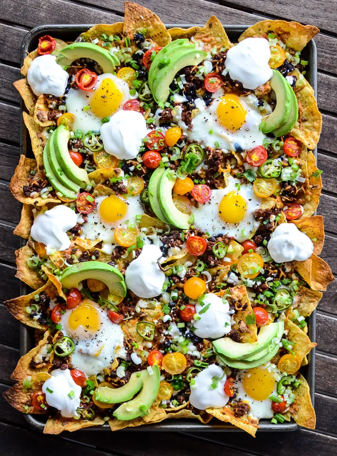

Breakfast Nachos

Breakfast Nachos
are a savory and satisfying twist on the traditional Tex-Mex favorite,
tailored for the morning meal. They typically start with a base of crispy tortilla chips layered
with breakfast staples like scrambled eggs, melted cheese, and crumbled bacon or sausage.
Common toppings include avocado slices, black beans, jalapeños, and a drizzle of sour cream or salsa,
making them a flavorful, hearty option to kick-start the day.
This dish is popular for its versatility and ease of preparation — perfect for a weekend brunch
or even a creative breakfast-for-dinner choice. Whether baked in the oven or assembled fresh,
breakfast nachos offer a fun and shareable way to enjoy a variety of bold flavors and textures in one dish.
Ingredients
- 1 bag of tortilla chips (about 150 – 200g)
- 3–4 eggs, scrambled
- 3–4 slices of bacon, cooked and crumbled
- 1 to 1½ cups shredded cheddar, Monterey Jack, or a cheese blend
- 1 avocado, sliced or diced
- ¼ cup black beans (cooked or canned, rinsed)
- 1 jalapeño, thinly sliced (optional)
- ¼ cup cherry tomatoes, halved or diced
- 2 tablespoons sour cream or Greek yogurt
- 2 tablespoons salsa or hot sauce
- 2 tablespoons chopped cilantro
- Salt and pepper to taste
Steps
- Preheat your oven to 180°C (350°F).
- In a skillet over medium heat, cook the bacon or sausage until browned and crisp.
- Remove and set aside on a paper towel.
- In a bowl, whisk the eggs with a pinch of salt and pepper.
- Pour into the same skillet and cook over medium-low heat until just set.
- Remove from heat.
- On a baking tray or oven-safe dish, spread out a layer of tortilla chips.
- Add scrambled eggs, crumbled bacon/sausage, and shredded cheese evenly on top.
- Bake for 5–7 minutes, or until the cheese is melted and bubbly.
- Remove from the oven and top with avocado, black beans, jalapeños, tomatoes, and cilantro.
- Drizzle with sour cream and salsa or serve them on the side.
- Serve immediately while hot and crispy.
Home